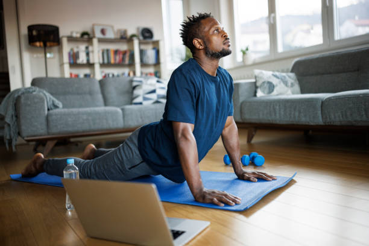
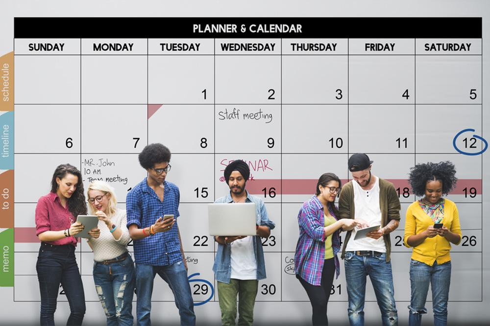
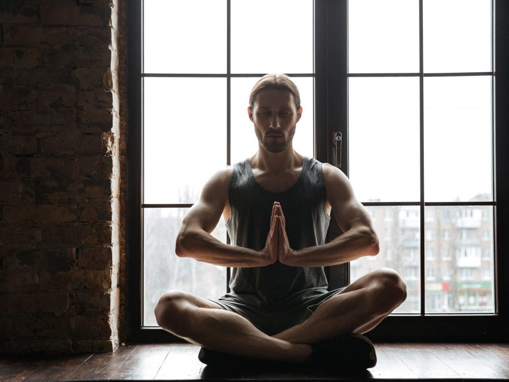

Soluciones Prácticas
-
Realiza Ejercicio Regular
El ejercicio físico, como caminar, correr o practicar deportes, ayuda a liberar endorfinas y reducir el estrés.
 -
Practica la Respiración Profunda
Realizar ejercicios de respiración profunda durante unos minutos al día puede calmar la mente y el cuerpo.
-
Establece Prioridades
Organiza tus tareas según su importancia y plazos. Usar listas de pendientes puede ser útil.
 -
Descansa Adecuadamente
Duerme al menos 7-8 horas cada noche para mantener tu energía y concentración.
-
Dedica Tiempo a tus Pasatiempos
Hacer actividades que disfrutas, como leer, dibujar o escuchar música, puede ayudarte a desconectar del estrés.
-
Habla con Alguien
Compartir tus preocupaciones con un amigo, familiar o terapeuta puede aliviar la carga emocional.
-
Practica la Meditación
La meditación o mindfulness puede ayudarte a estar presente y reducir pensamientos ansiosos.
